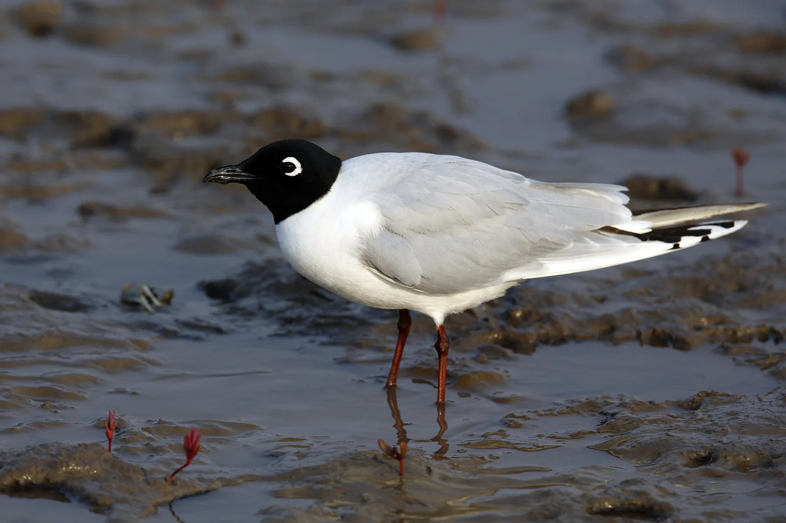

返回名录NO. 063 · 海岸与滩涂 / 鸥科 · Laridae
黑嘴鸥
Saundersilarus saundersi中国特有的珍稀小鸥，全球不足两万只
它是少数几种「以中国为分布中心」的鸥类：繁殖于渤海湾，越冬于东南沿海，全球种群仅一万余只。黑色的短喙、冬季耳后的一抹黑斑、红色的腿——在珠海的滩涂上遇见它，是一件值得记下来的事。
辨识特征 Identification
- 喙黑色，短而粗壮（相对其他鸥类），是「黑嘴鸥」之名的由来。
- 头部繁殖期整个头部黑色；非繁殖羽（华南越冬期）头白，耳后有一块明显的黑色月牙斑。
- 体羽背与翅淡灰色，体下白色，翅尖黑色；飞行时翼下浅灰，翼尖黑斑明显。
- 腿腿红色至橙红色，与黑喙形成鲜明对比。
习性 Behaviour
在滩涂、河口浅水区觅食，取食方式包括在水面掠食、浅水啄食与跟随潮线捡拾。常与其他鸥类、鸻鹬混群。对栖息地要求高，高度依赖沿海滩涂与鱼塘，围垦与人为干扰是主要威胁。越冬期在珠海沿海有稳定记录，需在退潮时于滩涂远距离观察。
鸣声 Voice
野外鸣声录音
点击波形可跳转 · 建议佩戴耳机
0:00 / 0:08
录音 iNaturalist 用户 hamsambly · 许可 CC BY-NC
· 原始文件
叫声尖细，类似「kee-ak」或「kweek」，比红嘴鸥的音调更高、更急促。
在珠海去哪里找 Where to Watch
- 金湾滩涂
- 淇澳岛外围滩涂
- 横琴河口
- 斗门沿海鱼塘
观察提示
国家一级保护动物。与红嘴鸥区别：黑嘴鸥喙黑、体型更小、腿更红；红嘴鸥喙与腿均鲜红、体型更大、冬季耳后黑斑更弥散。